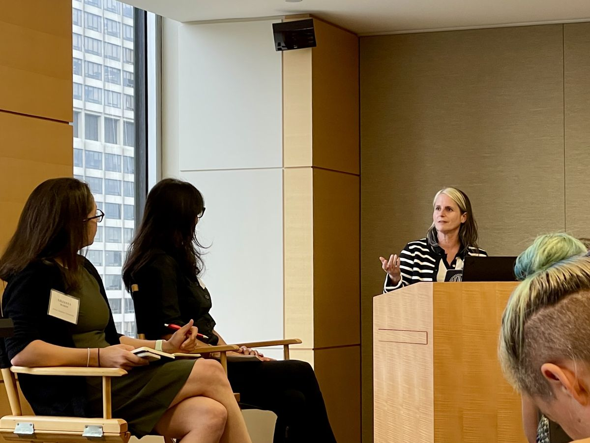

Teaching
Teaching
Syracuse University
- Graduate: Political Science 700, Seminar in Political Behavior (Fall 2024)
- Undergraduate: Political Science 315, Media and Politics, Washington, D.C. (Fall 2025, Fall 2026); team-taught with Margaret Talev’s COM 300, Democracy, Journalism & Citizenship
- Undergraduate: Political Science 470, Undergraduate Research Experience (Spring 2024)
- Curriculum development: Developing a minor in political communication with IDJC faculty and the Maxwell and Newhouse Schools; designed a team-teaching model linking PSC 315 and COM 300 (2025–present)

Earlier courses
At Texas A&M University I taught graduate seminars in political behavior, American politics, and media studies, and undergraduate courses on mass media and politics, media audiences, new media and civil society, and race, gender, and media. At Louisiana State University I taught graduate courses in research methods, content analysis, political communication, and legislative politics, and undergraduate courses in political communication and media and the policy process. At Sam Houston State University I taught media and politics, public opinion, and American government.
Full course history
Texas A&M University
- Graduate: Political Science 611, Seminar in Political Behavior (Spring 2022, Fall 2022, 2023); Political Science 670, Proseminar in American Politics (Spring 2021, Fall 2022, 2023); Communication 616, Social Science Approaches to Communication (Fall 2020); Communication 662, Graduate Survey in Media Studies (Fall 2017, Fall 2019)
- Undergraduate: Aggie Research Program Project and Team Leader (2021–2023); Political Science 302, Mass Media and Politics (Fall 2021); Communication 302, Mass Media and Politics (Fall 2017/2018, Spring 2018/2019); Communication 375, Media Audiences (Spring 2017); Communication 415, New Media and Civil Society (2017–2020); Communication 407, Race, Gender, and Media (Fall 2016); Communication 365, International Communication (Fall 2016)
Louisiana State University
- Graduate: Political Science 7935, Legislative Politics: Institutions (Fall 2015); Mass Communication 7000, Content Analysis (Fall 2015); Political Science 7935, Legislative Politics: Elections and Representation (Spring 2015); Mass Communication 7004, News Media and Governance (Fall 2010–2012, Spring 2015); Political Science 7900, Proseminar in American Politics (Fall 2014); Political Science 7903, Political Communication Seminar (Spring 2014); Mass Communication 7033, Race, Gender, and Media (Spring 2014); Mass Communication 7001, Introduction to Research Methods (Fall 2013); Political Science 7961, Approaches to Studying Social Science (Fall 2010–2013)
- Undergraduate: Mass Communication 3333, Multiculturalism and Media (Fall 2014); Political Science 3998, Mass Media and American Politics (Spring 2013); Mass Communication 3405, Introduction to Political Communication (Spring 2009/2010); Mass Communication 3505, Media and the Policy Process (Fall 2008, Spring 2011/2013); Political Science 4030, Political Attitudes and Public Opinion (Fall 2008)
Sam Houston State University
- Undergraduate: Political Science 364, Media and Politics (Spring 2007); Political Science 472, Public Opinion and Political Behavior (Fall 2006/2007, Spring 2007/2008); Political Science 261, Intro to American Government (Fall 2007, Spring 2008); Political Science 285, Intro to Public Policy (Fall 2006)
Textbook
Dunaway, J.L. and Graber, D.A. (2022). Mass Media and American Politics, 11th edition. Washington, D.C.: CQ Press. Earlier editions: 2017 and 2014.